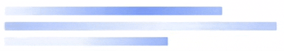

<mat-dialog-content>
    <div class="modal-content">
      <!-- <mat-spinner></mat-spinner> -->
      <!-- <p>{{ data.message }}</p> -->

      <div class="logo">
        
    </div>
    <div class="content">
        @if (data.page === 'sow') {
            <p class="content-heading">
              <span style="font-weight: 500;">Extracting data...</span>  Reading your document
            </p>
            <p class="content-messge">
                I’m automatically extracting information from your Statement of Work (SOW) to pre-fill your request form.
            </p>
        }
        @if (data.page === 'login') {
            <p class="content-heading">
                <span style="font-weight: 500;">Loading...</span>  Please wait
              </p>
        }
          
      </div>
    </div>
  </mat-dialog-content>
  